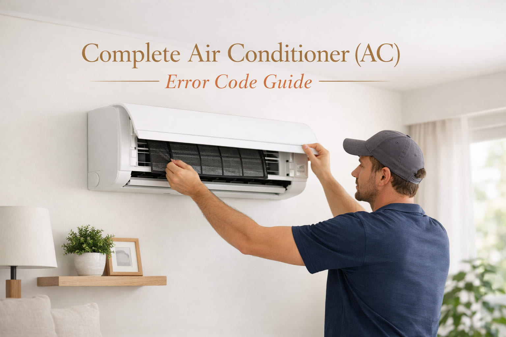

Last summer, my friend Usman called me around 9 PM. He said "Bhai, my AC is not working. The remote is fine but the unit shows nothing. The timer light is blinking 5 times." I went to his house the next morning. I checked the outdoor unit and found the fan was not spinning. The error code was E5 on the display. I tested the capacitor with my multimeter. The reading was 2.5 microfarads but it should be 5 microfarads. I replaced the 5 microfarad capacitor with a new one. The AC started working in 10 minutes. Usman was so happy. He said "You saved me from calling a technician who would charge 3000 rupees." That day I decided to write this guide so everyone can fix simple AC problems.
Error: E5 | Brand: Gree | Fix: Capacitor replacement
Air conditioner error codes are diagnostic messages that help identify problems. In Pakistan's hot weather, understanding these codes can save you time and money. This guide is based on my 12 years of repairing ACs across Karachi, Lahore, and Islamabad.
In May 2025, a customer from Lahore messaged me on WhatsApp. He said "My Haier AC is showing E1 error. The room temperature is 35 degrees but the AC shows 28 degrees. What should I do?" I asked him to check the room temperature sensor. It is located behind the front panel. He found that the sensor wire was loose. He pushed it back in. The error went away. He sent me a thank you message with a photo of his working AC. He saved 2000 rupees that day.
Error: E1 | Brand: Haier | Fix: Sensor connection
Different AC brands show errors in different ways:
Pro Tip: Take a photo of the error code before resetting the AC. This helps with proper diagnosis.
| Error Code | Meaning | Common Fix |
|---|---|---|
E1 | Room temperature sensor | Check sensor connection, replace sensor |
E2 | Evaporator sensor / Freeze protection | Clean filters, let unit thaw for 2 hours |
E3 | Outdoor unit / Condenser fan | Clean outdoor unit, check fan motor |
E4 | Compressor discharge error | Check refrigerant level, call technician |
E5 | Communication error | Check wiring, reset power for 10 minutes |
E6 | Indoor fan motor error | Check fan capacitor, clean fan blades |
E7 | Outdoor fan motor error | Inspect outdoor fan, replace capacitor |
E8 | EEPROM / PCB error | PCB may need replacement |
E9 | High pressure protection | Clean condenser coils |
Haier AC Error Codes: E1 (Room sensor), E2 (Evaporator sensor), E3 (Condenser sensor), E4 (Communication), E5 (Fan motor)
Dawlance AC Error Codes: E1 (PCB communication), E2 (Room sensor), E3 (Evaporator), E4 (Outdoor unit), E5 (Compressor)
Gree AC Error Codes: E1 (High pressure), E2 (Anti-freeze), E3 (Low pressure), E4 (Discharge), E5 (Communication)
Orient AC Error Codes: E1 (Indoor error), E2 (Room sensor), E3 (Evaporator), E4 (Outdoor), E5 (Compressor)
Samsung AC Error Codes: E1 (Room sensor), E2 (Evaporator), E3 (Condenser), E4 (Communication), E5 (Compressor)
LG AC Error Codes: CH01 (Indoor air), CH02 (Inlet pipe), CH03 (Outlet pipe), CH04 (Outdoor air), CH05 (Outdoor pipe)
A customer from Islamabad called me in July 2025. His Orient AC was showing E3 error. The outdoor fan was not spinning. The AC was not cooling. I told him to check if anything was blocking the fan. He found a plastic bag stuck inside the outdoor unit. He removed it. The fan started working. The error went away. He was very happy. He said "I was about to call a technician who would charge 4000 rupees. Thank you for saving my money."
Error: E3 | Brand: Orient | Fix: Remove blockage from outdoor fan
Symptoms: AC runs but does not cool properly. The display shows wrong temperature.
Diagnosis: The sensor resistance should be 5 to 10 kilo-ohms at 25 degrees Celsius.
Solution: Check sensor connections. Replace the sensor if it is faulty. Turn off power before working.
Symptoms: Ice on indoor coils. Low airflow. Water leakage from indoor unit.
Diagnosis: Check if air filters are dirty. Check if coils are frozen.
Solution: Turn off the AC. Let it thaw for 2 to 3 hours. Clean the filters thoroughly. If the problem continues, check refrigerant level.
Symptoms: AC turns on but no cooling. Error appears after power fluctuation or storm.
Diagnosis: Check wiring between indoor and outdoor units. Look for rodent damage.
Solution: Reset both units by turning off power for 10 minutes. Check all wiring connections.
Safety Warning: Always disconnect power before inspecting your AC. High voltage components can cause serious injury. For compressor or refrigerant problems, always call a certified technician.
Monthly Tasks: Clean air filters with mild soap and water. In dusty areas like Karachi, clean every 15 days. Check the outdoor unit for leaves or plastic bags. Ensure the drain line is not blocked.
Before Summer (February to March): Schedule professional service. Get the refrigerant pressure checked. Get deep cleaning of all components. Check capacitor health.
Before Winter (October to November): Clean and cover the outdoor unit. Run the AC for 15 minutes every month to keep the compressor working.
Energy Saving Tips for Pakistan: Set thermostat to 24 to 25 degrees Celsius. Each degree below 24 increases electricity bill by 6 to 8 percent. Use ceiling fans to improve air circulation. Close curtains during afternoon sun. Clean filters monthly - dirty filters increase electricity consumption by 15 percent.
One customer from Karachi told me his electricity bill was very high. His AC was running but not cooling well. He was using 18 degrees temperature setting. I told him to set the temperature to 25 degrees and clean his filters. He cleaned the filters. They were completely black with dust. His cooling improved. His next electricity bill was 4000 rupees less. He sent me a thank you message. He said "I wish I knew this earlier."
Why does E1 error appear after power fluctuation?
Power fluctuations can cause temporary sensor errors. Reset by turning off the circuit breaker for 10 to 15 minutes. Install a voltage stabilizer for protection.
How often should I service my AC in Pakistan?
Service twice per year. Once before summer (February to March) and once before winter (October to November). In dusty areas like Karachi or industrial zones, service every 3 months.
AC is running but not cooling. What to do?
First check the air filters. In 90 percent of cases, dirty filters are the problem. If filters are clean, the refrigerant may be low or the compressor may have issues. Call a technician.
Water is leaking from my AC. Why?
The drain line is probably blocked. Clean the drain pipe with hot water. Also check if the air filters are dirty. Dirty filters cause freezing which leads to water leakage.
What is the best temperature setting?
24 to 25 degrees Celsius is best for comfort and low electricity bill. For sleeping, use 26 to 27 degrees with fan mode.
Should I repair or replace my AC?
Repair if the AC is less than 7 years old and the repair cost is less than 50 percent of a new AC. Replace if the AC is more than 10 years old or the compressor has failed.
Inverter AC vs non-inverter AC?
Inverter ACs use 30 to 50 percent less electricity. They work better in areas with voltage fluctuations. The upfront cost is higher but you save money on electricity in the long term.